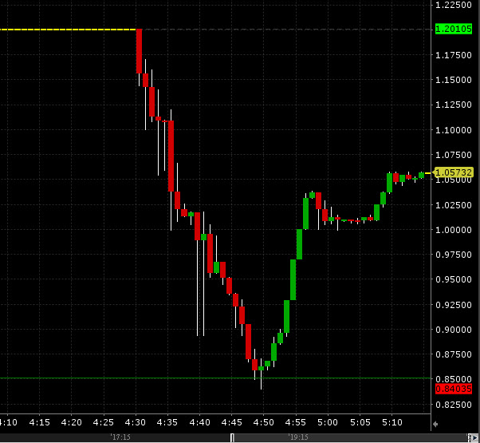

Tidak bisa dipungkiri bahwa kemajuan di bidang ilmu pengetahuan dan teknologi telah bergerak dengan sangat pesat. Kemajuan ini dapat kita lihat dari betapa banyaknya teknologi tingkat tinggi yang biasanya diawali dengan e, smart atau semacamnya. Smarthome, Smartcar, SmartTV, E-Fishery, E-Farm dan hal serupa. Kecanggihan teknologi ini lekat hubungannya dengan adanya inteligensi buatan. Pada tahun 2018, tercatat 15% dari perusahaan di era kini telah menggunakan AI dan angka itu diperkirakan mengganda pada 12 bulan mendatang. Angka ini menunjukkan bahwa AI sangat integral dalam perancangan sistem teknologi tinggi yang dibutuhkan pasar. Salah satu hal yang menarik untuk dibicarakan adalah melibatkan AI untuk membantu analisis pergarakan valuta asing.
Kecanggihan teknologi ini lekat hubungannya dengan adanya inteligensi buatan. Pada tahun 2018, tercatat 15% dari perusahaan di era kini telah menggunakan AI dan angka itu diperkirakan mengganda pada 12 bulan mendatang. Angka ini menunjukkan bahwa AI sangat integral dalam perancangan sistem teknologi tinggi yang dibutuhkan pasar. Salah satu hal yang menarik untuk dibicarakan adalah melibatkan AI untuk membantu analisis pergarakan valuta asing.
Scalping menurut saya adalah yang paling dapat diuntungkan dari pesatnya berkembang AI. Pasar valuta asing adalah pasar yang sangat cepat bergerak, tidak seperti saham pergerakan-pergerakan ini dapat terlihat dari satu bulan, seminggu atau bahkan perhari. Salah satu contoh dari betapa pesatnya pergerakan ini adalah pada mata uang GBP saat brexit dan CHF saat "tsunami" Franc. Berikut adalah gambar pergerakan Franc di masa 5 menit:
Dalam dunia analisis teknikal juga banyak dimiliki indikator-indikator seperti Bollinger Bands, CCIArrow, Oscillator, MACD, Envelopes, RSI dan semacamnya. Trader yang berarti manusia pada umumnya akan merasakan jenuh melakukan analisis manual terhadap setiap indikator, tetapi jika kita dapat mengenalkan agen yang secara otomatis melakukan analisis tersebut dan menciptakan sistem konsensus berdasarkan berbagai indikator ini apalagi dipertimbangkan pula analisis pada sibling pairs (pasangan mata uang dengan ekor atau kepala yang sama) maka akan sangat memungkinkan memunculkan sistem prediktif meski sangat singkat yang sangat-sangat akurat.
Mengapa baik melakukan transaksi shor term? Trend-trend panjang dan kanal-kanal tidak lain dibentuk dari sekian buah trend kecil. Trend kecil ini seolah-olah mencerminkan trend besar yang akan diciptakannya, oleh karena itu analisis trend kecil akan sangat menguntungkan permainan di trend mayor. Penggunaan sistem otomatis AI yang dapat melakukan hal ini juga akan memungkinkan traders untuk menjala pergerakan-pergerakan harga yang sangat kecil yang hanya bisa dideteksi oleh robot. Selain itu order-order bulk dapat dilakukan tanpa adanya kejenuhan.
Sumber:
- https://www.investopedia.com/terms/s/scalping.asp
- https://channels.theinnovationenterprise.com/articles/how-ai-came-to-dominate-the-forex-market
- https://www.statisticshowto.datasciencecentral.com/prediction-interval/